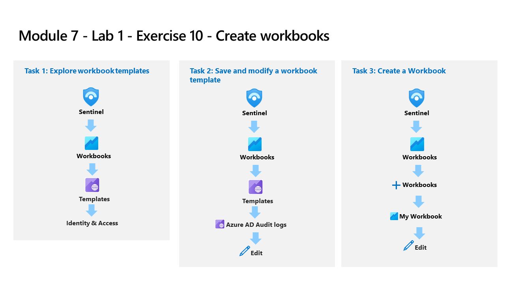
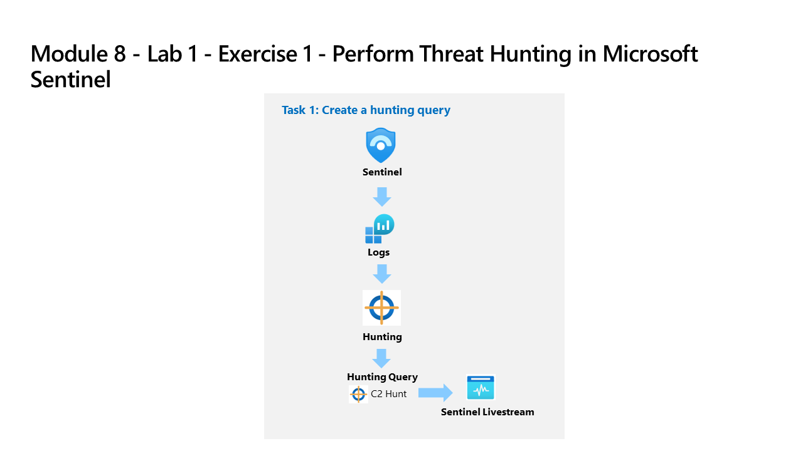

Lab 9 – Microsoft Sentinel: Threat Hunting, Workbooks & Notebooks
SC-200: Microsoft Security Operations Analyst
Overview
Performed proactive threat hunting in Microsoft Sentinel using custom KQL hunting queries and Livestream, built and customized Sentinel workbooks for security data visualization, and used Jupyter notebooks for advanced investigation. Supplemented with Microsoft Learn exercises for threat hunting setup and data visualization.

Lab architecture diagram — Source: MicrosoftLearning/SC-200T00A-Microsoft-Security-Operations-Analyst, MIT License
Tasks Completed
Created a custom KQL hunting query targeting C2 DNS communication patterns
Added the hunting query to Sentinel Hunting and ran it against collected log data
Promoted the hunting query to a Livestream to monitor for new matches in near real time
Explored Sentinel workbook templates and browsed the Identity & Access category
Saved and modified an Azure AD Audit Logs workbook template with custom parameters
Created a new custom workbook from scratch using the Sentinel workbooks editor

Lab architecture diagram — Source: MicrosoftLearning/SC-200T00A-Microsoft-Security-Operations-Analyst, MIT License
Opened a Jupyter notebook in Sentinel and connected it to the Log Analytics workspace
Ran notebook cells to investigate threat hunting data programmatically using Python and KQL
Completed Microsoft Learn threat hunting setup and hunt-for-threats exercises using Sentinel
Environment: Employer-provided Azure subscription (resources deleted after lab).